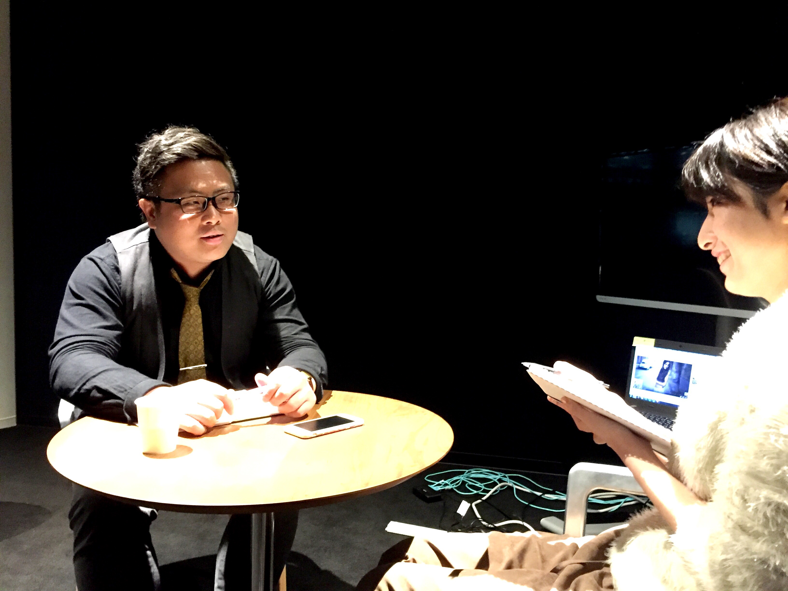
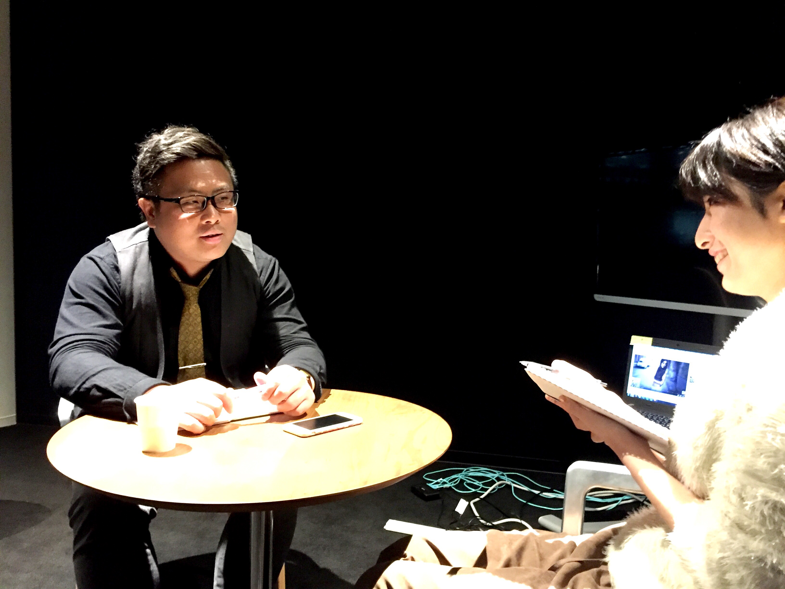
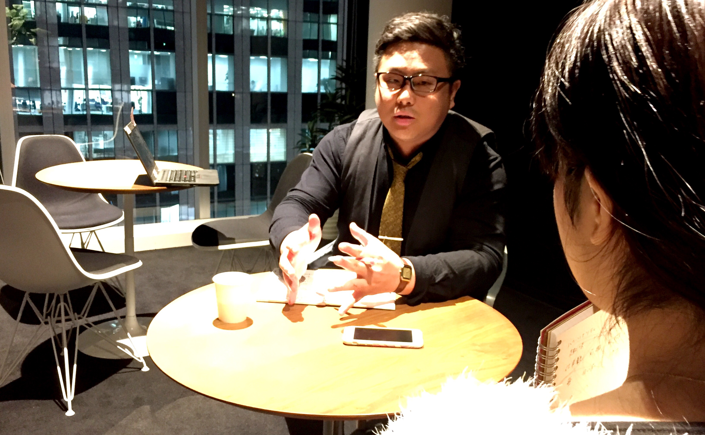
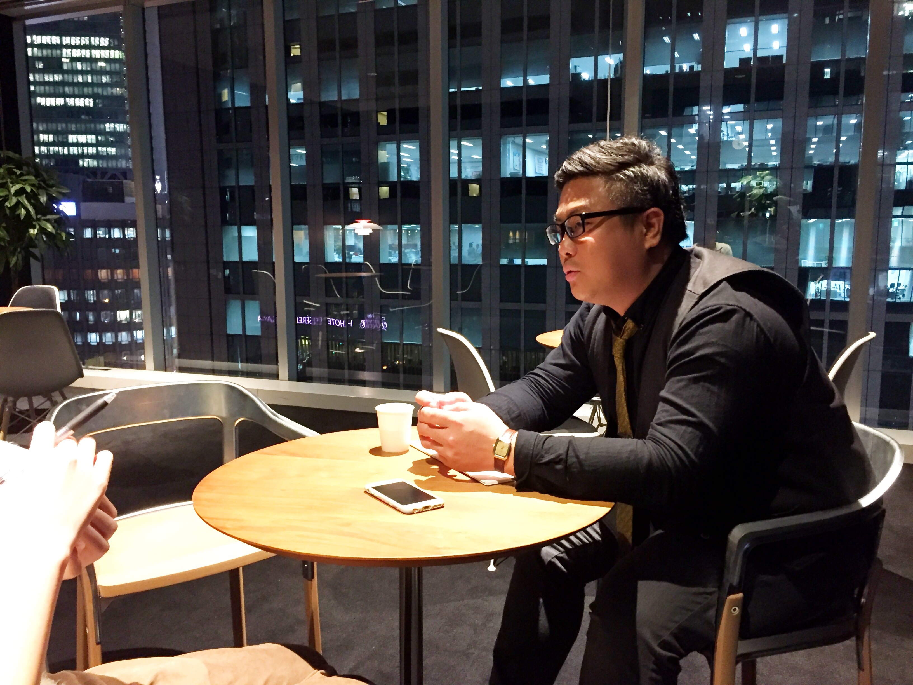
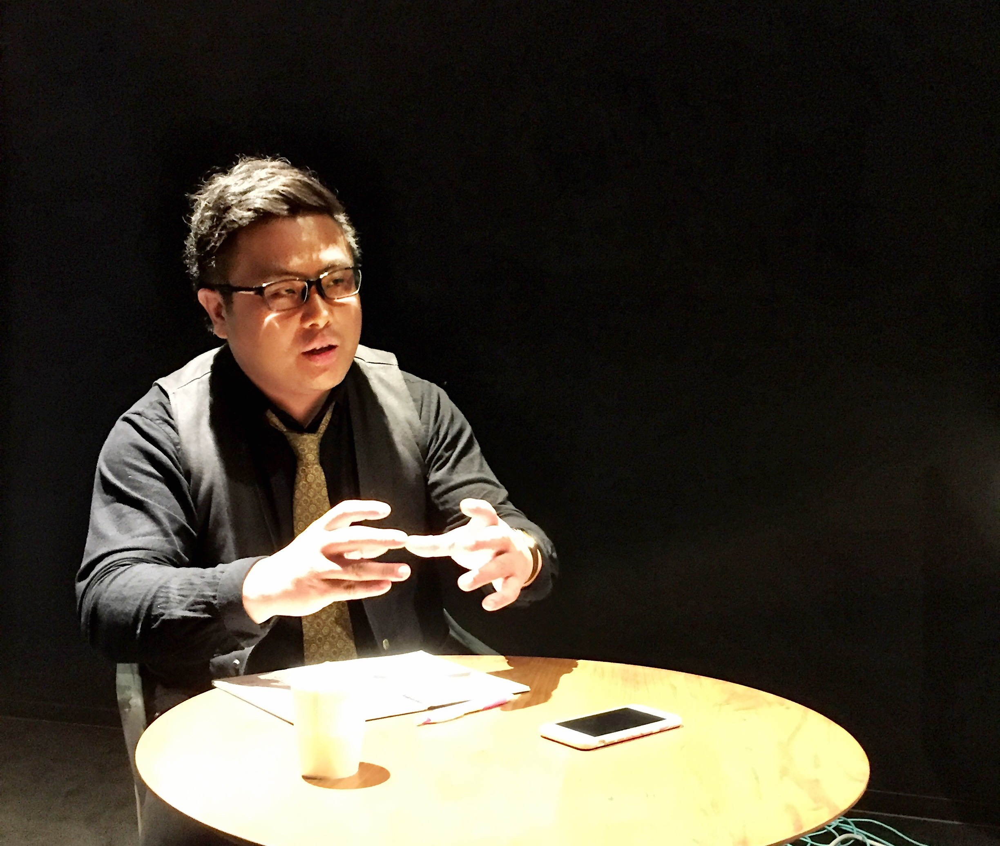

いつかライターになることを志して/桂 将士

みなさま、お疲れ様です！インターン一同です！
第6回目のインタビュー記事です！！！
残す所、これを合わせてあと３回ですね、、、
早速ですが、本日のインタビューです！
なんと本日のインタビューワーは辻本さんにタメ口を使う立松！
そして我々が突撃したのはメディカル大阪法人担当で破天荒な変態、
桂さんです！
桂さんいわく、立松と桂さんの会話は、その名の通り 混ぜるな危険！
会話がむちゃくちゃでした（笑）
では参りましょう。桂さんです！

第6回目のインタビュー記事です！！！
残す所、これを合わせてあと３回ですね、、、
早速ですが、本日のインタビューです！
なんと本日のインタビューワーは辻本さんにタメ口を使う立松！
そして我々が突撃したのはメディカル大阪法人担当で破天荒な変態、
桂さんいわく、立松と桂さんの会話は、その名の通り 混ぜるな危険！
会話がむちゃくちゃでした（笑）
では参りましょう。桂さんです！

桂 将士さん / Masashi Katsura
2015年10月入社
前職のドクターの紹介業で5年勤務したのちメディカル事業部に入社。
メディカル大阪支店で法人担当として、現在CA向けに事業所の詳細と分析を載せたカツマガを配信中。
オープンな性格から、朝のGood&Newで風俗に言った話までしてしまう。
ー（立松）桂さんは普段プライベートではなにをされていますか？
予定がない日はツタヤに行くか、梅田に飲みに行くかです。
梅田のチャーリーブラウンによく行きます。
映画もよく見ますね。CDをまとめ借りします。今の時代にとてもアナログですが。
中学は陸上で砲丸投げをしていました。
中学では大阪府西宮市の市内で3位になりましが、市内なんですごいかどうかもちょっとわかりにくいですよね（笑）
そして高校は帰宅部です。グレたわけではないんですが（笑）
それで婦人服を売るブティックでずっと働いていました（笑）
そこでおばちゃん達とうまく接する術を身につけましたね。
大学はメディカル大阪の大阪チームリーダーの品川さんと同じ大学に行きました。
高校で青春を桜花できなかったので、大学では学生らしい生活を求めて体育会系のラクロス部に入ったんですね。
でも思ったよりハードで週5で練習、休みは月曜日と火曜日のみ。
土日は練習でした。。。
今思えば体育会系に入ったのは後悔してますね（笑）
その当時、ベックっという音楽に明け暮れる若者を描いた青春映画が流行った頃だったので、軽音にも憧れがありました。
私も音楽がしたかった。
ここまで大丈夫ですか、私が一方的に話してますが（笑）
(ここまで最初の質問以外は、こちらからの質問なしで桂さんがひとりですべてお話してくれました、、、)ーでは次にお仕事に関してですが、、、
え、パーソナリティーに関してはもう終わり？俺が話した内容に関して質問は？（笑）
青木くんの時は好きな映画のタイトルとか聞いてましたよね？（笑）
ー（立松）じゃあ、好きな本はなんですか？
え、さっき本について一言も話してませんよね（笑）
ー（立松）すいません（笑）では、好きな歌手などいらっしゃいますか？
好きな歌手は北海道出身の3ピースバンドのtacica(タシカ)というグループです。
ずっと売れていなかったのですが、
2013年にリリースした『HALO』という曲が『宇宙兄弟』の映画のオープニングに使われ、知名度をあげました。
そこで私はこれからも世間的に知名度をあげて、もっと売れて行くんじゃないかと踏んでいたのでですが、
それ以降はめっきりでしたね（笑）
ー（立松）見込み違いだったのですね。
そうですね（笑）
ー（立松）見込み違いだったのですね。

ー（立松）そろそろ仕事に関してお伺いしてもいいですか？（笑）
いいですよ（笑）
ー（立松）前職は同じように人材系だとお伺いしてましたが、どのような人材を紹介されていたのですか？
ドクターの紹介です。
レバの看護師紹介とはまた違って、お医者様を紹介していました。
ー（立松）ドクターの紹介は具体的に何をするのですか？
ドクターを、紹介します（笑）
ー（立松）ですよね（笑）
新卒ではサンゲツという専門商社に９ヶ月だけ勤めていました。
退職理由は、会社の組織形態が好きになれなかったからです。
一族経営の会社で、各支店の支店長が神様のように崇められているようなところなんですね。
それである時、会社の食堂で、いくつも並んでいる冷奴の中に一つだけ立派なガラスに盛り付けられている冷奴がありまして、
それを何も考えずに取ったんですね。
そして席につくと向かいの先輩に、「それ返してこい！」、と言われました。
「なんでですか？」と尋ねると、「それ店長の冷奴や！」と言われました（笑）
実はどのメニューにも店長用のお皿があったようでして（笑）
そんなことばかりでしたのですぐに会社をやめました。
そのあとなのですが、22歳で一度ニートになりました。
髪もヒゲも長く生やして、毎日電車で揺られているサラリーマンを見ては「頑張ってるなー」と思っていましたね（笑）
母親には就活しなさいとうるさく言われていたので、毎日スーツを着て家を出ていました（笑）
スーツを着てはいますがもちろん髪もヒゲもボウボウです、、、
母親にはクリエイティブな会社を受けていると言って家を出ていました（笑）
貯金はある程度あったのでできる限りニート生活で過ごしてやろうと思っていました。
自分が一番底辺だと思っていたので、いい意味で振り切れていましたね（笑）
バリバリ働いている友達と会うたびに、働くことをからかっていたら、
そのうちの何人かは連絡がつかなくなることもありました（笑）
しばらくニートで過ごしたあと、貯金がつきたのでバイトを始めました。
バイト先は100円均一のキャンドゥーでしたが、しばらくニートをしていたこともあり、
働くのがすごく楽しかったです。とにかく人と話すのが楽しかった（笑）
それで、その働きぶりが評価されたので社員にならないかと打診されました。
私はずっと100円をさばく仕事をこの後も続けたいとは思わなかったので、お断りしましたが（笑）
ー（立松）キャンドゥの次がドクターの紹介業ですか？
そうです、まともな収入を求めて正職員になることを考え始めたからです。
ただ、そのドクター紹介の会社に入社した理由は、面接を受けたら受かったからです（笑）
人材紹介どころかなんの会社が全然知らずに行った上に、
お金がなくて、靴が買えなかったのでハイブーツで面接を受けたのに、受かったんです。
志望動機は「世の中を良くしたいと思ってます」としか言っていません（笑）
ー（立松）前職はどのくらい在籍していましたか？
5年です。ドクターっていうと頭がよくて高収入で世間的にも一目置かれる存在ですよね。
そんな人たちが頼らざるを得ないアドバイザーってという立場で仕事をすることはやりがいがありました。
ドクターによっては60歳以上の方がいて、私の三倍くらいの年齢の人が頼ってくることがあります。
ドクターとの面談中、「俺より学歴も職歴もいい人がこんなニート上がりの自分に転職先お願いしてる」って思い、
心の中でいい気分になっていましたね（笑）

ー（立松）レバに転職を決めたきっかけは？
前職もベンチャーだったのですが、人が増えてきて、組織体制に苦しんだからです。
広島に支店を出すということで前職の最後の一年は広島で働いていました。
ただ、支店長が仕事ができない方で、それでも上司に取り入るのが上手かったので支店長を任せてもらえていたような方でした。
私はその支店長のもとで働くのは嫌だったので、
仲のいい先輩を巻き込んでその支店長をこき下ろそうと試みました。
でもそれが失敗に終わり、私が東京に飛ばされることが決まってしまいまして、、、
それが気に入らなかったので東京いくなら会社やめます、と本心ではなかったのですが、上司へ駆け引きに出たところ、本当に辞める運びになりました（笑）
言ってしまった手前、取り下げることができなかったんです（笑）
まぁ5年勤めましたし、ちょうどいい節目だったのかなって思います。
そのあとはすぐにレバに内定をもらえたので、有給をしっかりと40日使い切ってから辞めました（笑）
ー（立松）レバを選んだ理由はなんですか？
最初全然違う業界に行きたかったんですが、なかなか現実は厳しくてどうしようと思っていたんです。
でもこのまま転職活動を長く続けていくよりも、5年やった紹介業で転職をする方が即戦力になれると思いました。
前の会社がドクターと薬剤師の紹介をしていたので、医療業界では看護師だけ携わったことがなかったので、
前の会社と同じベンチャーで、かつ看護師の紹介をしているレバに決めました。
ー（立松）面接は辻本さんという話でしたが
はい、辻本さんでした。
辻本さんと面接をして、内定をいただいた後に、
東京のオフィスにて「桂くんは辻本さんが上司になるんだよね？大変だよね、頑張ってね？」と言われたんですよ。
え、何を言ってるんだ、面接の時は優しかったのにって。当時はそんなに怖い方だとは思っていなかったですね…笑
今では向かいの席で毎日デコと脇に汗ばっかりかいてます（笑）
ー（立松）今働いてて直近で掲げてる目標はありますか？
法人営業部隊を大きくしていきたいです。
ドクターとかの競業他社等の話を聞いていると、
レバも事業所側の担当はもっと多くてもいいのではないかという印象なので。

ー将来的にやりたいことはありますか？
やりたいことは何個かあります。
そのうちの一つはライターの仕事ですね。
レバへの転職の際に、レバ以外にライターの職種も応募したんですよ。
前職で事業所訪問で感じたことを原稿に書いていくという業務を行っていましたので、
その経験を活かしたくて、ライターに応募したのですが、ダメでした。
ですが、今でもまだライターをしたいという気持ちは強く残っていますね
ー桂さんのモットーはなんですか？
「他社よりふざけて他社より稼ぐ」ことですね。
大手って仕事の仕方的に、キリッとしてピリピリしてる会社が多いと思うのですが、
そういう会社に、あんなふざけてるのになんで俺らより数字稼いでるんだ！って思わせたいですね。
ー様々なお話、ありがとうございます！では最後にインターンへ一言ください！
楽しく働く感覚を身につけてほしいです。
あと、いつでも相談できる相手を、同期にも先輩にも作って欲しいです。
そんな人が周りにいるだけで、自分の成長力や、働くことに対して安心感が大きく違ってくると思います。
ただ、立松さんは先輩に、特に辻本さんへタメ口を使うことを直しましょうね（笑）
 |  |
 |  |  |
 |
 |
Daisuke.A |
Yuto.T |
Tomoya.S |
Naho.Y |
Ayaka.D |
Kaori.T |
Yusuke.T |